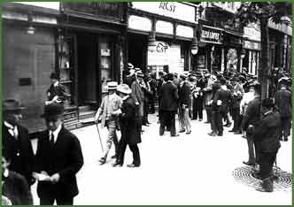

|  | |||
| In 1910 Andor Miklós (1880–1933) founded the most successful and largest publishing house in Hungary of that era, Az Est (The Evening). He published Pesti Napló (Pest Diary, 1920–1939), a morning paper, Az Est (1910–1939), an afternoon paper and Magyarország (Hungary, 1919–1939), an evening paper. | |||